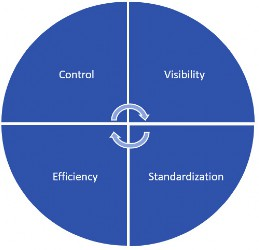
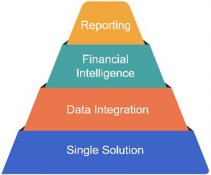

Account Reconciliations Overview
Account Reconciliations are a key step to the financial close process. At its most basic, an Account Reconciliation can be defined as:
The ability to substantiate an account balance using independent means to validate the accuracy of transaction inflows and outflows to ensure that the ending balance is what it should be.
Reconciliations have been a part of business from the beginning of time. Validating balances and transactions is part of daily operations. For example, if you sell a glass of lemonade for $1, it is easy to ensure that you receive the $1 at the time of the transaction. However, if the lemonade stand is open and happens to be set up on a running path with hundreds of runners stopping for lemonade, now the flow of transactions becomes very rapid. The exchange of product for money is happening at a pace that is very difficult to keep track of. What does the lemonade stand owner do at the end of the day? They reconcile the cash in the till to the glasses of lemonade sold, to ensure that all the cash was received, aka an Account Reconciliation.
Expand that example to today’s world with global organizations that employ thousands of employees, transacting in many currencies, purchasing significant materials, selling a multitude of products, and it starts to become complicated and difficult to manage. How do we ensure the financial balances are complete and accurate? How do we make sure errors are not being made that have a material financial impact? How do we fend off theft or fraud? One way that organizations mitigate these potential issues is by performing Account Reconciliations.
Account Reconciliations Overview
Reconciliation Process
When performing Reconciliations, it is typically part of the organization’s month-end close process and is performed within the General Accounting and Shared Service departments. As mentioned, companies may choose to perform Reconciliations to mitigate risk, but they may also prepare Reconciliations to facilitate audit requests, statutory obligations, or the more prevalent requirement of Sarbanes-Oxley. The Reconciliation process is defined into three key areas:
Preparation
Review and sign-off
Monitoring
Account Reconciliations Overview › Reconciliation Process
Preparation
Preparing the Reconciliation is the process of analyzing the ending General Ledger balance at a point in time. Account Reconciliations are performed typically on Balance Sheet Accounts but can be done on any Account that is significant to the organization. The Reconciliation preparation for most organizations is a very manual process of gathering information, setting up workpapers, and then performing the analysis. Unfortunately, although the most important step is the analysis, Preparers spend significant time on the former.
The different types of Reconciliations that a User will prepare are broken down into the following categories:
Cash – Bank, Investments, etc.
Customer-Related – Account Receivables, Deferred Revenue, etc.
Vendor-Related – Accounts Payables, Accruals, etc.
Business Operations – Inventory, Fixed Assets, Intercompany, etc.
How the User analyzes the Account depends on the types of transactions flowing through it. Customer receivables are confirmed through analysis of the subledger, while Cash Accounts are mainly substantiated utilizing bank information. Reserve Accounts, meanwhile, are validated through calculation. Whatever the method, a good Reconciliation will include the General Ledger balance, detailed explanations, and all the analysis and support needed to substantiate the balance to within a threshold set by the organization’s accounting policies.
Account Reconciliations Overview › Reconciliation Process
Review and Approve
Once a Reconciliation is prepared, the User must sign-off on the workpapers. In addition, every Reconciliation typically requires a review and approval process to validate the Preparer’s work. Depending on the importance of the Account, it may require multiple Approvers to reduce risk. For all roles, the sign-off process is the User attesting that they performed their responsibilities regarding the Reconciliation process in accordance with the organization’s policies.
Account Reconciliations Overview › Reconciliation Process
Monitoring
Monitoring is the overarching control process to ensure that everything is being done as expected. This process helps to inform management of any identified issues or risks.
Monitoring includes:
Ensuring all Reconciliations have been completed within the due date set.
Sign-offs have been completed by the required roles.
Newly-created General Ledger Accounts have been included in the Reconciliation process and properly assigned to End-Users to complete and review.
Adjustments identified in the process have been escalated or corrected.
Account Reconciliations Overview
Manual Reconciliation Process
The process, as defined above, is typically manual in most organizations. Reconciliations are prepared in Excel in varying file formats, and the files are saved to shared folders or printed – depending on the requirements – with an overall Administrator tracking the process to ensure all the work has been done. Although the manual process has worked for many years, as companies grow and become more global with multiple financial systems, it is very difficult to ensure the accuracy, completeness, and validity of the work performed.
The typical issues we see prevalent in a manual process today are:
Ensuring the General Ledger balances are accurate and up-to-date.
All required Reconciliations for a specific period have been prepared.
Any past due Reconciliations are identified.
New Accounts are properly included in the process.
Reconciliation explanations fully validate the General Ledger balances within the threshold set.
Proper support has been attached.
Identified open items that need correction are highlighted.
Open items are properly aged.
In addition, a manual process is tedious from an approval perspective. Gathering Reconciliation approvals manually can be done in many ways. In some organizations, the Preparer would print the Reconciliation and walk it around for physical signatures. Others would leverage emails to document approvals. We have also seen Users copying a signature image into the Excel file, which requires someone opening the file to ensure sign-off. All of these methods are very time-consuming and prone to error.
Account Reconciliations Overview
Automating with OneStream
Moving your process to OneStream, and using the Financial Close solution, not only eliminates the concerns identified above, but also results in a more streamlined, automated solution, delivering the four key pillars of a good Reconciliation process:
Visibility
Standardization
Efficiency
Control

Figure 1.1
The following sub-sections highlight a few of the items that the solution delivers, relating to each of the key pillars.
Account Reconciliations Overview › Automating with OneStream
Visibility
Global repository for all Reconciliations and related support.
Delivered Dashboards and scorecards to monitor the organization’s process for complete governance.
Detail item classification; aging and reporting to escalate potential issues and risk.
The ability to drill down from the consolidated financial statement balance to the underlying Reconciliations, to better understand the financial statement line item.
Account Reconciliations Overview › Automating with OneStream
Standardization
A Reconciliation template library with the ability to associate specific templates to specific Accounts to ensure standardization across the organization.
The User Interface is consistent – regardless of the Reconciliation – for ease of preparation, review, and audit.
The ability to assign risk, due dates, and frequencies to ensure Reconciliations are performed consistently.
Item Type classifications are used to categorize open items across the organization.
Rejection Reason Codes are employed to help identify why Reconciliations are sent back to the User.
Account Reconciliations Overview › Automating with OneStream
Efficiency
Leverages the trial balance loaded for Actuals to populate the two key processes – Consolidations and Reconciliations – ensuring that they are both in sync.
Automatically creates the Reconciliation for the User, and populates it into the proper period based on the frequency set.
Electronic Workflow routes the Reconciliation to the appropriate Users based on the number of required approvals, with email alerts if desired.
An Auto Reconciliation process that systematically prepare or fully approve Reconciliations that meet specific rules, thus eliminating manual intervention.
Identifies and creates Reconciliations for new Accounts created in the underlying General Ledger.
Account Reconciliations Overview › Automating with OneStream
Control
Balances are automatically updated with new trial balance loads, ensuring the Reconciliation is up-to-date.
The segregation of duties is enforced, preventing Users from preparing and approving their own work.
Thresholds are set to ensure Reconciliations are not prepared if not fully explained to within the threshold set.
Reports are available to monitor the process and confirm Reconciliations are done within the due date set.
Corrections are identified and aggregated to determine if there are any material corrections that need to be addressed.
Account Reconciliations Overview
Next Level of Excellence
Utilizing OneStream’s Account Reconciliation Solution elevates the overall process. However, the OneStream application offers additional value that many may not be aware of, including:
Single Solution
Data Integration
Financial Intelligence
Reporting
We will discuss each of these areas at a high level, but more detail on each topic can be obtained in the OneStream Foundation Handbook.

Figure 1.2
Account Reconciliations Overview › Next Level of Excellence
Single Solution
One of the difficult issues facing financial processes today is the many systems that are involved. Data is consistently moving around organizations and being replicated in multiple tools to support different processes. The trial balance alone is used to satisfy consolidations, financial and management reporting, Reconciliations, forecasting, budgeting, and tax provision calculations, to name but a few! If each of these processes is in separate software, imagine the time it takes to load the data, validate that it matches the source, and ensure it is kept up to date when changes are made. The time and effort are exhausting, not to mention the costs and risks associated with supporting disparate systems. Now, focusing on Reconciliations, how do we ensure that the balances used in the Reconciliation process are truly the balances used for financial reporting? Do I have to reconcile my Reconciliations? If using a point solution or Excel, the answer is YES! However, when utilizing OneStream, this multiple system loading and reconciling is resolved.
At the base of the pyramid in Figure 1.2 is the single solution. Having a single solution to maintain and control all your critical processes is, by far, one of the most beneficial aspects of the OneStream application. The system leverages the single trial balance load to populate all the processes identified above. Not only does this mean we are all utilizing the same data, but as the underlying data changes, all processes properly reflect the updated information and are kept in sync.
In addition, a single solution reduces our technical footprint. Instead of maintaining multiple solutions, which Users need to access and be trained on, there will be a single solution for maintenance.
Account Reconciliations Overview › Next Level of Excellence
Data Integration
Gathering data is an important step in the process. Reconciliations not only require General Ledger balances, but you may also need journal entries, subledgers, third-party reports, bank transactions, and more to perform your work. Collecting the data can be time-consuming, difficult to extract, and require manual manipulation, depending on the data format.
For OneStream, data integration is a foundational process and a core competency of the Platform. Being able to bring in data from any source system, either through flat files or direct connects, and enriching the data using Transformation Rules, significantly reduces the amount of work for the User. Eliminating manual manipulation will also ensure the data is processed consistently each time it is received, and reduces errors. In addition, OneStream does not require a specific file format, so you do not need to change the layout of your file extracts.
Data integration also supports bringing in data at varying levels. Instead of just bringing in subledger or third-party balances, the system can bring in the detail and aggregate the information, allowing you to view a balance with drill down capabilities. Also, if using direct connect to bring in the data, you can set up drill back to the source to query information as needed.
Account Reconciliations Overview › Next Level of Excellence
Financial Intelligence
Financial intelligence is the ability to aggregate, calculate, translate, and create logic in the process. Inherent in the application, the Account Reconciliation solution can leverage the existing financial intelligence of OneStream to enhance a User’s Reconciliation experience. They can use the dimensionality of the application to create more detailed Reconciliations or the hierarchies to report Reconciliation performance at varying levels. Business logic can also be created to write Completion Rules or Certification Rules beyond what is already delivered. Financial intelligence does not exist in other point solutions and is a significant differentiator when utilizing OneStream.
Account Reconciliations Overview › Next Level of Excellence
Reporting
Reporting is important to managing the process. As you will see later in this book, the Account Reconciliation solution delivers standard Dashboards and Reports. However, each organization typically has different metrics they use to monitor the process. Unlike other solutions that result in Users extracting the data to other software to produce the needed reporting, OneStream has robust reporting capabilities within the application, meaning you can create any Report needed.
The reporting capabilities within OneStream also allow Users to create and surface any information from the system. We can combine data from different processes like Consolidation, Reconciliations, and Forecasting, to present better reporting and analysis. If the data is in the system, you will be able to report on it.
Also, Reports built within OneStream can be exported, printed, or emailed. The system also allows for scheduled reporting, which will automatically email or save Reports on a scheduled basis using the Parcel Service capabilities.
Account Reconciliations Overview
Let’s Go
Now, let’s begin our detailed discussion of the Account Reconciliation solution. In the next three chapters, we will: 1. Walk through the administration process and how to set up the solution, 2. Share implementation best practices, and 3. Finish with the User’s experience. It is an exciting journey you are embarking on, and we know you will soon see the many benefits of using OneStream for your Account Reconciliation process!